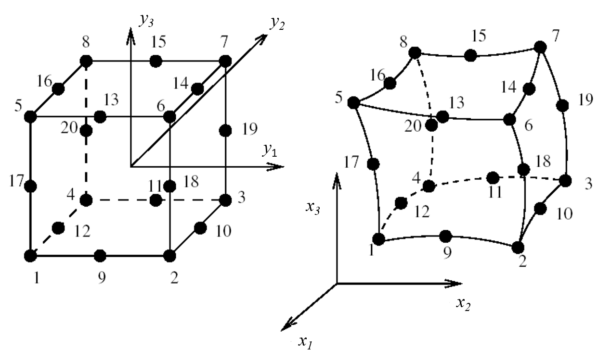
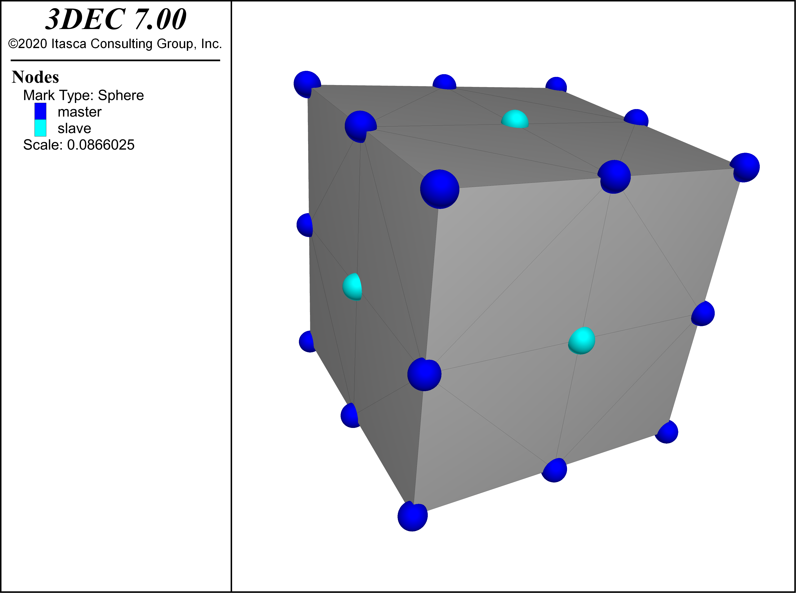
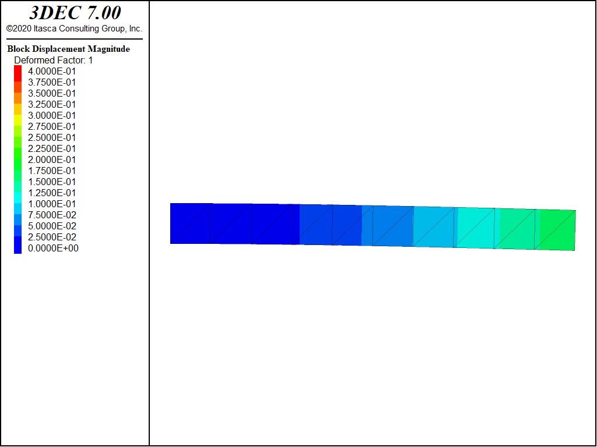
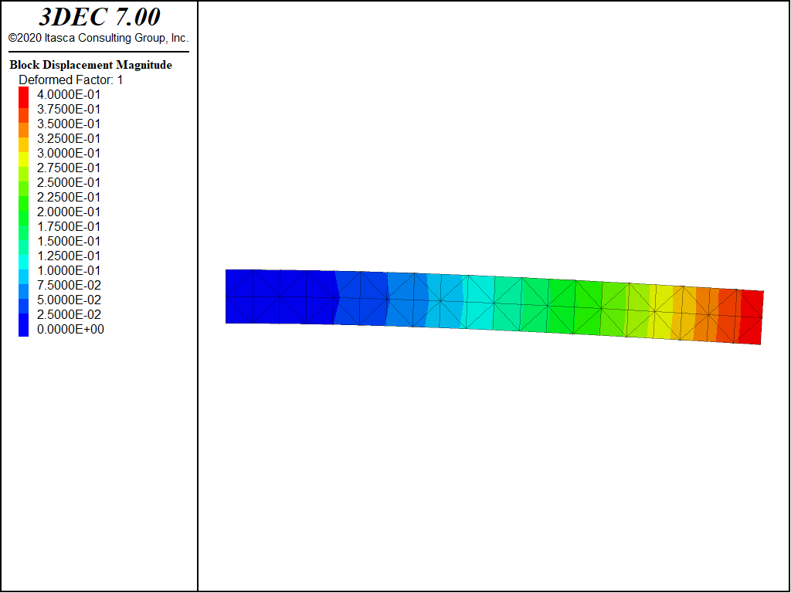
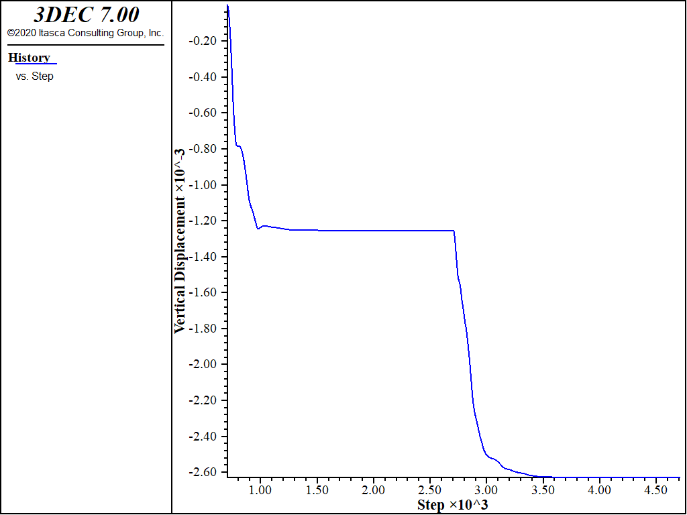
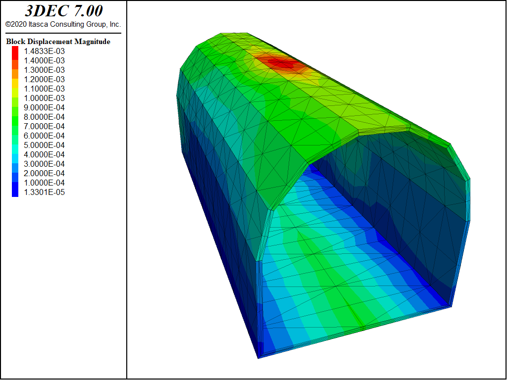

结构有限元
本节介绍一种有限元计算形式，可用于模拟隧道衬砌及其他与 3DEC 块体连接的结构，例如坝。还介绍它在 3DEC 显式求解方案中的实现，以及为处理特殊有限元块体与标准 3DEC 块体之间接触而开发的计算逻辑。并解释为读取或生成有限元块体网格、赋予材料模型与属性而添加到 3DEC 的输入命令和关键字。
单元公式
新增模块创建可加入 3DEC 模型的特殊有限元块体，原模型由标准多面体可变形块体组成。新有限元块体的网格采用三维 20 节点六面体单元。本节给出的单元公式遵循有限元教材中的标准方法（Hughes 1987）。
等参有限元的几何，通过将标准立方体单元映射到实际单元形状来描述，如图 3.5 所示。← 此图似乎从未存在。该图还标明所用节点编号约定。对于 20 节点六面体单元，各边由抛物线段定义。
符号约定
大写下标，例如 \(I\)，表示单元节点，范围为 1 至 20。小写下标，例如 \(j\)、\(k\) 和 \(m\)，表示坐标方向，范围为 1 至 3。重复下标表示求和。
几何映射
标准单元为立方体，8 个节点位于角点，12 个节点位于边中点，其几何在 \(y\) 坐标系中定义，取值范围为 −1 至 1，如图 1（Figure 1） 所示。


图 1：局部坐标系（左）和全局坐标系（右）中的 20 节点有限元
标准单元任意点坐标记为
变换后单元中的对应点为
单元节点 \(I\) 的坐标为
单元几何映射由以下关系控制：
它将任意点坐标 \(x\) 表示为节点形函数 \(N_I\) 与节点坐标 \(x_I\) 乘积的总和，其中形函数是自然坐标 \(y\) 的函数。
该变换的雅可比矩阵为
数值计算其逆矩阵为
形函数 \(N_I\) 及其对标准单元坐标 \(\partial/\partial y_m (N_I)\) 的导数表达式见后文讨论，即“形函数及其导数（Shape Functions and Derivatives）”主题。
位移与应变
等参单元位移场由类似几何映射式 (1) 的表达式控制。
其中，点 \(y\) 处一般位移矢量为
单元节点 \(I\) 的位移矢量为
为推导定义如下的应变表达式，
必须根据式 (2) 计算位移场导数，
应用链式法则，可获得形函数对全局坐标的导数：
为方便起见，将应变张量各分量组合为矢量形式：
将式 (3) 和 (4) 代入式 (5)，并将结果写成矩阵形式，可将应变表示为
其中，节点 \(I\) 的应变—位移矩阵为
应力与节点力
由于单元力—位移关系不能表示为闭式形式，必须采用数值积分。单元应变和应力在单元高斯积分点处计算。根据式 (6) 获得应变及应变增量后，应用所假定的本构模型，得到新应力。形式上写为，
其中，应力排列为矢量形式，
与给定应力状态等效的节点 \(I\) 处节点力矢量为
并计算为
在单元体积上的积分，通过对各高斯点处被积函数值求和进行数值计算，即
其中，\(V_G\) 为根据几何变换雅可比矩阵得到的微元体积项，\(W_G\) 为标准高斯点权重（Hughes 1987）。目前实现可使用 2 × 2 × 2 或 3 × 3 × 3 个高斯点。前者对应减缩积分，在某些无约束系统中可能允许虚假机制。但由于其速度较快，而且 2 × 2 × 2 高斯点位置的应力通常更准确，因此将其作为默认选项。
重力
与体积力等效的节点力，体积力为
，由以下表达式给出：
这些量也采用数值计算。
集中力
集中力，例如施加在单元面上的点接触力，会产生节点力，对于节点 \(I\) 为
其中，形函数在力的作用点处取值。
单元在 3DEC 中的实现
20 节点六面体单元的实现，旨在使特殊块体顺利融入 3DEC 计算逻辑。尤其要求新块体与接触逻辑、求解算法和图形程序的关键部分兼容，如后续各节所述。
3DEC 标准可变形块体为多面体，内部采用四面体网格，因此外表面由三角形面定义。接触逻辑和图形表示均基于三角剖分表面。20 节点六面体表面通常为曲面，其几何接触计算需要不同且昂贵得多的处理。因此，为使特殊有限元块体可由相同程序处理，采用三角形组成的多面体表面近似其外边界。如图 2（Figure 2） 所示，六面体每个面均采用八个三角形面近似。
在 3DEC 中，块体剖面位移和应力的图形表示，假定已离散为四面体网格单元。为使这些程序可用于 20 节点六面体，设计了一种简单方案，将每个单元虚拟离散为四面体。利用面中心的附加节点（如图 2（Figure 2） 所示）及单元中心的另一个节点，将每个单元分成 8 个子六面体。再按与上述三角面近似一致的方式，将每个子六面体分成 6 个四面体。为便于绘图，四面体网格单元赋予最接近高斯点的应力状态。
该方案需要在单元中增加六个面中心节点和一个中心节点。这些节点作为从属节点处理，利用假定变形场（见式 (1)），由 20 个主节点获得其速度和位移。从属节点的 \(y\) 坐标列于“形函数及其导数（Shape Functions and Derivatives）”。


图 2：20 节点有限元，显示用于面三角剖分的从属节点（浅蓝色）。
接触力
单元节点无论为主节点还是从属节点，都执行与网格单元网格点相同的功能；接触计算中也同样作为顶点处理。因此，可以使用标准 3DEC 接触逻辑，其子接触位于顶点—面和边—边相互作用位置。
假定采用近似三角剖分表面来计算有限元块体子接触处的位移，因此与多面体块体相同，由网格点位移获得。施加于六面体面中心从属节点的接触力，必须通过式 (9) 传递给主节点。
3DEC 接触检测程序所用公共平面逻辑假定块体为凸体。如果有限元块体非凸，则其表面凹陷部分检测不到接触。如果凹面必须与其他块体接触，就必须将该有限元块体分成凸块体；这些块体可像常规块体一样连接，使其表现为整体块体。
边界荷载与速度的施加
使用 boundary 命令施加的外荷载，也会依据三角剖分边界施加到有限元块体。施加于从属节点的荷载，将像接触力一样通过式 (9) 自动传递给主节点。与常规块体相比，唯一区别是重力荷载的处理，必须通过式 (5) 引入。
在 3DEC 中，通过 boundary 命令规定网格点速度，施加固定位移条件。有限元节点也采用这一过程。
求解算法
3DEC 求解过程基于显式时间步进算法，对节点运动方程积分。动力和准静力分析采用同一过程。对于后者，引入较高阻尼，使其收敛到静力平衡或某种破坏机制。可变形块体离散为网格单元或有限元后，对每个网格点的运动方程积分。有限元块体同样处理，即对于给定节点 \(I\)，运动方程可表示为
其中，\(m\) 为节点质量，\(\alpha\) 为黏性阻尼参数，\(F_I\) 为节点力矢量。节点力由四个分量求和计算：
其中：
数值稳定所需时间步长的计算，基于将有限元虚拟离散为网格单元。由于已知这些网格单元组合后的表现比实际 20 节点六面体更刚硬，因此这种近似给出安全估计。静力分析中，通过质量缩放过程确定网格点质量。动力分析中，仍用四面体网格确定网格点质量，并保持单元总质量不变。对于这类等参单元，还存在提供对角质量矩阵的更准确方案（Hughes 1987），因为显式求解方法不允许使用标准单元公式导出的一致质量矩阵。
有限元块体的生成与使用
为在 3DEC 模型中使用有限元块体，必须通过 config feblock 命令选择配置选项，以分配所需附加存储。多数涉及特殊块体的操作均使用 feblock 命令，并通过具体关键字调用。有两种方式将特殊块体引入模型：
- 从文件读取预先生成的有限元网格；以及
- 在砖形块体内部自动生成网格。
第一种方式通过 feblock 命令的 read 关键字调用，必须创建 ASCII 文件，按有限元程序典型格式描述网格：
- 标题；
- 包含节点数 NN 和单元数 NE 的头行；
- 节点坐标：共 NN 行，每行给出一个节点的 \(x y z\) 坐标；以及
- 单元定义：共 NE 行，每行列出一个单元的节点。
更多详情见有限元块体的命令与关键字（Commands and Keywords for Finite Element Blocks）。由于 3DEC 的求解过程，节点编号顺序不影响求解。可以为每个单元提供完整的 20 节点列表，也可读入 8 节点六面体单元网格，即仅含角点。程序会自动插入边中附加节点，将这些单元转为 20 节点单元。
只有 8 顶点砖形块体内部才能自动生成有限元网格。可使用 3DEC 任意块体生成和切割命令创建这些块体，再通过 feblock gen 创建规则 20 节点单元网格，将它们转为有限元块体。用户只需指定块体三个轴向上所需的单元尺寸。
有限元块体的力学行为可由 3DEC 任意常规本构模型控制。通过 feblock change 赋予材料编号和本构编号。同一块体中不同单元可采用不同材料。
为应用于拱坝，开发了专用程序，使混凝土结构与地基岩体在几何上适当吻合，前者由一个或多个有限元块体表示，后者由常规多面体块体表示。通常使用面向坝工程的前处理软件生成混凝土壳体有限元网格，并从文件读入 3DEC。随后调用新程序，创建与地基表面吻合的一组常规块体。将这些块体全部连接后，再通过切割命令引入岩体不连续面。
第一步是定义有限元网格的地基表面。通过 feblock mark sregion 赋予块体面的表面区域编号，可用于此目的。由于地基表面的面通常可能弯曲，提供 linearize 关键字，将这些面各边上的节点准确置于边中点，使其与多面体地基块体吻合。随后使用 base 关键字并给出合适几何参数，创建直接位于地基面下方的块体，以及向上游、下游延伸的块体。
形函数及其导数
等参 20 节点六面体单元由 \(y\) 坐标系中定义的标准立方体单元推导，见图 3.5。标准单元节点位置列于下表。节点 1 至 8 位于角点，节点 9 至 20 位于边中点。
| 节点 | \(y_1\) | \(y_2\) | \(y_3\) |
| 1 | -1 | -1 | -1 |
| 2 | 1 | -1 | -1 |
| 3 | 1 | 1 | -1 |
| 4 | -1 | 1 | -1 |
| 5 | -1 | -1 | 1 |
| 6 | 1 | -1 | 1 |
| 7 | 1 | 1 | 1 |
| 8 | -1 | 1 | 1 |
| 9 | 0 | -1 | -1 |
| 10 | 1 | 0 | -1 |
| 11 | 0 | 1 | -1 |
| 12 | -1 | 0 | -1 |
| 13 | -1 | -1 | 1 |
| 14 | 0 | 0 | 1 |
| 15 | 1 | 1 | 1 |
| 16 | 0 | 0 | 1 |
| 17 | -1 | -1 | 0 |
| 18 | 1 | -1 | 0 |
| 19 | 1 | 1 | 0 |
| 20 | -1 | 1 | 0 |
用于面三角剖分、编号为 21 至 27 的从属节点坐标列于下表。节点 21 至 26 位于面中心，节点 27 位于单元中心。
| 节点 | \(y_1\) | \(y_2\) | \(y_3\) |
| 21 | 0 | 0 | -1 |
| 22 | 0 | 0 | 1 |
| 23 | 0 | -1 | 0 |
| 24 | 0 | 1 | 0 |
| 25 | -1 | 0 | 0 |
| 26 | 1 | 0 | 0 |
| 27 | 0 | 0 | 0 |
单元六个面的节点定义如下。前四个节点为角点，接下来的四个为边中点，最后一项为面中心的从属节点。
| 面 | 节点 | |||||||||
|---|---|---|---|---|---|---|---|---|---|---|
| 1 | 2 | 3 | 4 | 5 | 6 | 7 | 8 | 9 | ||
| 1 | \(y_3\) = -1 | 2 | 1 | 4 | 3 | 9 | 12 | 11 | 10 | 21 |
| 2 | \(y_3\) = 1 | 5 | 6 | 7 | 8 | 13 | 14 | 15 | 16 | 22 |
| 3 | \(y_2\) = -1 | 1 | 2 | 6 | 5 | 9 | 18 | 13 | 17 | 23 |
| 4 | \(y_2\) = 1 | 3 | 4 | 8 | 7 | 11 | 20 | 15 | 19 | 24 |
| 5 | \(y_1\) = -1 | 4 | 1 | 5 | 8 | 12 | 17 | 16 | 20 | 25 |
| 6 | \(y_1\) = 1 | 2 | 3 | 7 | 6 | 10 | 19 | 14 | 18 | 26 |
20 节点六面体单元形函数基于 \(y\) 参考系中的二次多项式。其表达式及对 \(y\) 坐标的导数列于下文。常数 \(y_{Ik}\) 表示节点 \(I\) 的坐标，见表 1（Table 1）。
角点节点：I = 1 至 8
边中节点：I = 9, 11, 13, 15
边中节点：I = 10, 12, 14, 16
边中节点：I = 17, 18, 19, 20
有限元块体的命令与关键字
3DEC 中以下命令用于有限元块体：
模型配置有限元区块命令（model configure feblock） |
feblock generate |
feblock gravity |
feblock list |
验证：悬臂梁
二次有限元的一项优点，是能够准确表示弯曲。为检验这一点，建立一个简单悬臂梁模型。
一端固定弹性梁的挠度为
其中：
\(W\) 为施加于自由端的力；
\(L\) 为长度；
\(E\) 为杨氏模量；以及
\(I\) 为截面惯性矩。
对于尺寸为 1x1x10 m、杨氏模量 1 MPa、施加荷载 100 N 的梁，挠度应为 0.4 m。
若沿梁长采用 10 个六面体网格单元建模，所得位移见图 3（Figure 3）。该情况下误差超过 50%。
若同一梁采用 10 个有限元建模，结果见图 （Figure）Figure #fbeam-fem。此时误差小于 1%。


图 3：采用六面体网格单元模拟的悬臂梁位移。


图 4：采用有限元模拟的悬臂梁位移。
fem_beam.dat
model new
model config feblock
[a = 1.0]
[force = 100.0]
[E = 1e6]
[L = 10.0]
block create brick 0 [L] 0 [a] 0 [a]
feblock generate 1 1 1
block zone cmodel assign el
block zone prop dens 2000 young [E] poiss 0.2
block gridpoint apply vel 0 0 0 range pos-x 0
; 将力除以 3，因为它施加在三个网格点上
block gridpoint apply force-z [-1.0*force/3.0] range pos-x [L] pos-z [a]
model large-strain off
model solve
fish def solution
local moi = a*a/12.0
deflection_analytical = force*L*L*L/(3*E*moi)
local gp = block.gp.near(10,1,1)
deflection_3dec = -1.0*block.gp.disp.z(gp)
error_ = 100.0*math.abs(deflection_3dec - deflection_analytical)/deflection_analytical
io.out("Error: "+string(error_)+"%")
end
[solution]
示例：隧道衬砌
如上所示，20 节点有限元在模拟弯曲方面明显优于常规六面体有限体积网格单元。因此，一项应用是用它们模拟隧道衬砌。
重建用户指南中的简单隧道示例（simple tunnel example from the User’s Guide），并采用有限元模拟衬砌。隧道构建及达到初始平衡的过程，与用户指南完全相同，唯一区别是必须在创建块体之前发出 model config feblock。随后开挖隧道，像用户指南示例一样将反力降至 50%。接着，按下列数据文件在隧道表面周围创建块体，表示厚度为 0.2 m 的衬砌。块体创建后，使用 feblock generate 命令将其转为有限元。为衬砌单元及衬砌与岩石之间接触赋予属性。循环计算模型，直到位移不再变化（图 5（Figure 5））。衬砌位移见图 6（Figure 6）。


图 5：安装有限元衬砌后楔形体的竖直位移。


图 6：有限元衬砌中的位移。
tunnel_linerblocks-fem.dat
model rest 'tunnel_ini'
block gridpoint ini disp 0 0 0
model mech time-total 0
; 标记边界面
block face group 'surface' range group-int 'rock' 'exc'
; 删除内部块体
block delete range group 'exc'
; 施加 50% 应力
block face apply stress -1.35 -1.35 -2.7 0 0 0 range group 'surface'
; 重新施加前后边界约束
block gridpoint apply vel-y 0 range pos-y -10.0
block gridpoint apply vel-y 0 range pos-y 10.0
; 楔体内某点的历史
history delete
block hist name 'Vertical Displacement' dis-z pos 0 -0.2 4.3
model cyc 2000
; 移除荷载
block face apply-remove stress range group 'surface'
; 创建用于定义衬砌块体的棱柱
fish define make_liner
thick = 0.2
; 左下
p1 = vector(-4,-10,-4)
p2 = vector(-4+thick,-10,-4+thick)
p3 = vector(-4+thick,-10,0)
p4 = vector(-4,-10,0)
p1b = p1 + vector(0,20,0)
p2b = p2 + vector(0,20,0)
p3b = p3 + vector(0,20,0)
p4b = p4 + vector(0,20,0)
command
block create prism face-1 [p1] [p2] [p3] [p4] &
face-2 [p1b] [p2b] [p3b] [p4b] &
group 'liner'
end_command
; 底部
p4 = p2
p4b = p2b
p2 = vector(4,-10,-4)
p3 = vector(4-thick,-10,-4+thick)
p2b = p2 + vector(0,20,0)
p3b = p3 + vector(0,20,0)
command
block create prism face-1 [p1] [p2] [p3] [p4] &
face-2 [p1b] [p2b] [p3b] [p4b] &
group 'liner'
end_command
; 右下
p1 = p2
p4 = p3
p1b = p2b
p4b = p3b
p2 = vector(4,-10,0)
p3 = vector(4-thick,-10,0)
p2b = p2 + vector(0,20,0)
p3b = p3 + vector(0,20,0)
command
block create prism face-1 [p1] [p2] [p3] [p4] &
face-2 [p1b] [p2b] [p3b] [p4b] &
group 'liner'
end_command
;
; 圆弧的圆心和半径
local txc = 0.0
local tzc = 0.0
local tr = 4.0
; 8 段
local seg = 8
loop i (1,seg-1)
local theta = 180.0/(seg-1)*(i-1)*math.degrad
local px1 = txc + tr*math.cos(theta)
local pz1 = tzc + tr*math.sin(theta)
local theta2 = 180.0/(seg-1)*(i)*math.degrad
local px2 = txc + tr*math.cos(theta2)
local pz2 = tzc + tr*math.sin(theta2)
local px3 = txc + (tr-thick)*math.cos(theta2)
local pz3 = tzc + (tr-thick)*math.sin(theta2)
local px4 = txc + (tr-thick)*math.cos(theta)
local pz4 = tzc + (tr-thick)*math.sin(theta)
command
block create prism face-1 [px1] -10 [pz1] [px2] -10 [pz2] [px3] -10 [pz3] [px4] -10 [pz4] ...
face-2 [px1] 10 [pz1] [px2] 10 [pz2] [px3] 10 [pz3] [px4] 10 [pz4] ...
group 'liner'
end_command
end_loop
end
[make_liner]
;
block hide range group 'liner' not
; 生成有限元单元
;在 x、z 方向指定较大尺寸，使衬砌厚度方向仅有一层单元
feblock generate 20 2.5 20
;
; 混凝土衬砌参数
block zone cmodel assign elastic
block zone prop density 0.0024 young 30000 poiss 0.2
; 混凝土与岩石接触面
block hide off
block contact gen-sub
block contact jmodel assign mohr range group-intersect 'liner' 'rock'
block contact prop stiffness-normal 10000 stiffness-shear 2000 friction 35 range group-intersect 'liner' 'rock'
; 为衬砌施加前后边界约束
block gridpoint apply vel-y 0 range pos-y -10.0
block gridpoint apply vel-y 0 range pos-y 10.0
;
; ---------------------------------------------------------------------
;
;
; 运行一个计算循环，以强制计算接触法向
model cyc 1
model cycle 2000
;
model save 'tunnel_linerblocks_fem'
在 3DEC 中创建坝有限元基础模型的示例
参考文献
Brierley, G.《大型浅埋岩石地下洞室衬砌施工期间的性能》。博士学位论文，伊利诺伊大学厄巴纳—香槟分校（1975）。
Cheung, Y. K., I. P. King and O. C. Zienkiewicz.《任意形状和支承条件的板桥——基于有限元的一般分析方法》，Proc. Inst. Civ. Eng.，40，9-36（1968）。
Desai, C. S., and J. F. Abel.《有限元法导论——工程分析的数值方法》。纽约：Van Nostrand Reinhold Company（1972）。
Dixon, J. D.《考虑支护—岩石相互作用的隧道支护结构分析》，美国内政部矿务局研究报告 RI7526（1971 年 6 月）。
Hughes, T. J. R.《有限元法：线性静力与动力有限元分析》。Prentice Hall（1987）。
Lemos, J. V.《节理岩石地基上拱坝的建模》，载于《岩石力学与岩石工程中的预测及性能》（ISRM 国际研讨会 EUROCK ’96 论文集，意大利都灵，1996 年 9 月），第 1 卷，第 519-526 页。G. Barla 主编。鹿特丹：A. A. Balkema（1996）。
Lemos, J. V. 等。《节理地基上拱坝的试验研究》，载于第八届国际岩石力学大会论文集（日本东京，1995 年 9 月），第 3 卷，第 1263-1266 页。T. Fujii 主编。鹿特丹：A. A. Balkema（1995）。
Lorig, L. J.《用于节理介质开挖和支护设计的混合计算模型》。博士学位论文，明尼苏达大学（1984）。
Monsees, J. E.《华盛顿地铁系统的车站设计》，载于工程基金会会议论文集——喷射混凝土支护。ACI 出版物 SP-54（1977）。
Paul, S. L. 等。《混凝土隧道衬砌设计建议》，伊利诺伊大学，交通部报告 DOT-TSC-UMTA-83-16（1983）。
Zienkiewicz, O. C.《有限元法》。伦敦：McGraw-Hill Book Company (UK) Limited（1977）。
| 这些内容对您有帮助吗？… 版权与免责声明 | FLAC3D © 2019, Itasca | 原文更新于 2020 年 10 月 8 日 |